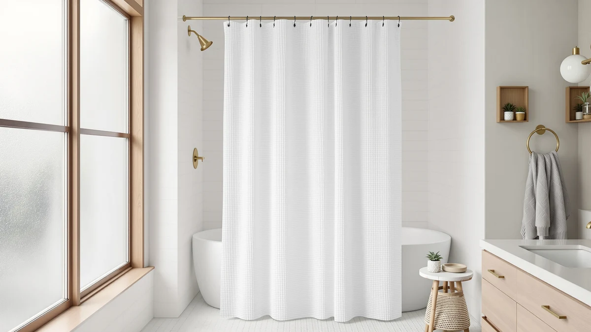

Hookless It’s A Snap! Waffle Shower Curtain Review (2026): Worth It?
Prices and picks verified as of November 2026. Independent, reader-supported reviews.


Quick Answer
The Hookless It's A Snap! Waffle earns its $40.15 price with a 4.6 star rating from 91,662 verified reviews, the deepest review history of any curtain in this comparison. If you want a snap-on install with no separate rings and a textured waffle face, it is the strongest overall pick here.
Our pick: Hookless It’s A Snap! Waffle — $40.15 Check Price on Amazon
Bottom line: our top pick is the Hookless It’s A Snap! Waffle Shower Curtain at $35.92.
Things to Know Before You Buy
- This hookless it's a snap! waffle shower curtain review found the Hookless It's A Snap! Waffle costs $40.15 and carries a 4.6 star rating from 91,662 verified reviews, far more than any alternative in this comparison.
- It uses a snap-on panel system instead of rings or hooks, so it attaches straight to a standard shower rod in a 36x72 inch size with a polyester and PEVA build.
- eachope's No Hooks Needed Linen ($29.69, 4.7 stars, 623 reviews) is the closest price match, while XOGUIBO's Farmhouse Ruffle ($28.99) and Madison Park's Anna Sheers ($26.99) take a softer, decorative approach instead of a textured one.
- Price spreads by more than $13 across these four curtains, so budget and style matter more here than any single spec.
This hookless it’s a snap! waffle shower curtain review found the Hookless It's A Snap! Waffle to be the strongest overall pick at $40.15, backed by a 4.6 star rating from 91,662 verified reviews, by far the deepest review history of any curtain covered here. Shoppers who want a softer, decorative look instead of a textured snap-on curtain should weigh it against the three alternatives below first.
This hookless it's a snap! waffle shower curtain review compares the Hookless It's A Snap! Waffle's $40.15 price, 36x72 inch polyester and PEVA build, and 4.6 star rating from 91,662 reviews against three curtains shoppers often consider alongside it: eachope's No Hooks Needed Linen, XOGUIBO's Farmhouse Ruffle, and Madison Park's Anna Sheers. All three cost less, but none comes close to matching its review history, so the choice comes down to how much that track record is worth to you.
Why You Should Trust Us
Ilane Tall has covered bathroom textiles and shower hardware for Best Shower Curtains since the site launched, and this hookless it's a snap! waffle shower curtain review follows the same research process used throughout the site: comparing manufacturer specs, current pricing, and verified owner feedback rather than running a physical testing lab. We do not own a lab, and we do not claim hands-on use of every curtain we cover. Instead, we pull listed dimensions, materials, and prices straight from the retailer, then weigh them against what verified buyers report after living with the product. Readers can find the full methodology behind every review on this site on our how we research page, and the same approach governs this hookless it's a snap! waffle shower curtain review from the pricing table through the final verdict.
How We Compared
Our process for this hookless it's a snap! waffle shower curtain review starts with the manufacturer's own listing: material, dimensions, price, and published rating, cross-checked against the three comparison curtains on the same criteria. From there, we read through verified buyer reviews on Amazon to see how the snap-on system and waffle texture hold up over daily use and how the sizing matches real bathrooms. We did not purchase or install any of the four curtains ourselves. Owners report that the snap panels stay attached through regular opening and closing, and that feedback shaped how we weighed the Hookless pick against its three rivals.
Overview & Specs

Hookless It’s A Snap! Waffle
What we like
- Carries a 4.6 star rating from 91,662 verified reviews, by far the deepest review history in this comparison
- Snap-on panels replace separate rings or hooks, so installation takes one step
- Waffle weave texture adds visual depth without the bulk of a heavier linen curtain
Flaws but not dealbreakers
- At $40.15, it costs more than all three alternatives in this comparison
- Ships in a single 36x72 inch size, so a wider stall or nonstandard rod may need a different curtain
| Material | Polyester / PEVA |
| Size | 36x72 |
Hookless builds this curtain around its signature snap system: instead of threading rings or hooks through grommets, you snap the top panel directly onto a shower rod. The waffle version adds a grid-like texture to the polyester and PEVA fabric, giving it more visual depth than a flat curtain without the weight of a heavier chenille or fabric pick. At $40.15, it costs more than eachope's $29.69 linen-look curtain, XOGUIBO's $28.99 farmhouse ruffle, and Madison Park's $26.99 sheer, but it backs that price with a 4.6 star rating across 91,662 verified reviews, a review base no other curtain in this comparison comes close to matching.
Owners report that the snap panels stay attached through regular opening and closing and that the polyester and PEVA blend resists the mildew smell that heavier cotton curtains tend to pick up in a humid bathroom. That combination of review volume and snap-on convenience is the clearest advantage this hookless it's a snap! waffle shower curtain review found over the three alternatives, none of which list a comparable review count. The tradeoff is the single 36x72 inch size. A nonstandard stall, a clawfoot tub, or a rod wider than 36 inches will need a different curtain, since Hookless does not currently list a wider cut for this waffle style.
What We Liked
The waffle weave texture is the standout feature. It gives the curtain a raised, grid-like surface that reads as more substantial than a flat polyester sheet, without pushing the price into premium territory. The snap-on system also removes a step most shower curtain shoppers take for granted: no threading rings through grommets, no hooks that snag or rust over time. The Hookless It's A Snap! Waffle's 4.6 star rating from 91,662 reviews gives this hookless it's a snap! waffle shower curtain review far more owner data to draw on than eachope's, XOGUIBO's, or Madison Park's listings, none of which publish a review count close to that figure.
A 36x72 inch size covers most standard stalls, so most shoppers can order it without measuring a rod first. The polyester and PEVA blend also dries faster than a cotton curtain, which matters in a bathroom without much airflow. That combination of texture, convenience, and track record is why this hookless it's a snap! waffle shower curtain review keeps coming back to Hookless as the strongest overall pick in the group.
What Could Be Better
This hookless it's a snap! waffle shower curtain review found one clear tradeoff: the $40.15 price sits well above the other three curtains in this comparison, costing roughly $10 to $13 more than eachope, XOGUIBO, and Madison Park. That gap is real, and it means Hookless is not winning on cost. It wins on review history and the convenience of its snap system instead.
The single 36x72 inch size is also a limit. Shoppers with a wider stall, a clawfoot tub, or a rod longer than 36 inches will need to look elsewhere, since Hookless has not published a larger cut for this waffle style. Buyers who prefer a softer, more decorative look, such as a ruffled farmhouse edge or a sheer fabric, should compare XOGUIBO's or Madison Park's picks before committing to the waffle texture. Anyone curious about keeping either style fresh can check our shower curtain cleaning guide for upkeep tips.
Who Is It For?
Based on this hookless it's a snap! waffle shower curtain review, the Hookless It's A Snap! Waffle fits a shopper with a standard-size bathroom who wants a textured, grid-weave look and values a deep, verified review history over the lowest possible price. It also suits anyone who wants to skip rings and hooks entirely, since the snap panels handle installation in one step. You can browse our wider hookless shower curtain roundup if you want more snap-on options beyond this one, or compare it directly against the brand's non-waffle Hookless It's A Snap! curtain if texture is not a priority.
Shoppers who want a patterned or decorative design instead of a texture, a size larger than 36x72, or the absolute lowest price among these four should compare eachope, XOGUIBO, or Madison Park before deciding. Someone decorating a single, well-trafficked family bathroom gets the most out of this particular pick, since the snap system and the review count both hold up under daily use.
Alternatives to Consider
This hookless it's a snap! waffle shower curtain review would not be complete without the field it beat. If the waffle texture or the $40.15 price does not fit your bathroom, these three curtains cover a softer linen look, a rustic farmhouse ruffle, and a lightweight sheer, each at a lower price than the Hookless pick.

Editor’s Pick
eachope No Hooks Needed Linen
A hookless linen-look curtain at $29.69 with a 4.7 star rating from 623 reviews, the highest average rating in this comparison despite fewer total reviews than the Hookless pick.
$29.69
Check Price on Amazon
Best Value
XOGUIBO Farmhouse Shower Curtain Ruffle
A ruffled farmhouse style at $28.99, the lowest price in this comparison, for shoppers who want a rustic look over the Hookless pick's grid texture. See our farmhouse shower curtain roundup for more rustic options.
$28.99
Check Price on Amazon
Premium Choice
Madison Park Anna Sheers Shower
A lightweight sheer curtain at $26.99 from Madison Park's Anna collection, built for a softer, airier bathroom than the Hookless waffle texture provides.
$26.99
Check Price on AmazonDoes the Hookless It's A Snap! Waffle Shower Curtain actually need no hooks?
Yes.
Is the waffle texture hard to keep clean?
Reviewers consistently note that the polyester and PEVA blend wipes down easily and resists the mildew smell that heavier cotton curtains can develop in a humid bathroom.
Frequently Asked Questions
Does the Hookless It's A Snap! Waffle Shower Curtain actually need no hooks?
Yes. The curtain uses a built-in snap system along the top edge, so it attaches directly to a shower rod without separate rings or hooks. Owners report the snaps hold through regular opening and closing, which is the main reason this hookless it's a snap! waffle shower curtain review keeps coming back to it as the top pick.
Is the waffle texture hard to keep clean?
Reviewers consistently note that the polyester and PEVA blend wipes down easily and resists the mildew smell that heavier cotton curtains can develop in a humid bathroom. It is not a no-maintenance curtain, but it does not require special washing instructions beyond a normal machine cycle.
How does the Hookless It's A Snap! Waffle compare to the standard Hookless It's A Snap! curtain?
Both use the same snap-on installation, but the Waffle version swaps the smooth face for a textured, grid-like weave. Shoppers who already like the brand's hookless system and want more visual texture should look at the Waffle; those who prefer a flat, simple look can compare it against the standard Hookless It's A Snap! curtain instead.
Final Verdict
This hookless it's a snap! waffle shower curtain review lands on the Hookless It's A Snap! Waffle as the strongest overall pick, not because it is the cheapest option here, but because it pairs a convenient snap-on install with a 4.6 star rating from 91,662 verified reviews, a review base none of the three alternatives come close to matching. If you want a flat budget option instead of a $40.15 price, eachope's linen-look curtain is the better fit. For most shoppers who want a textured, hookless curtain backed by real owner data, Hookless is the pick to buy.